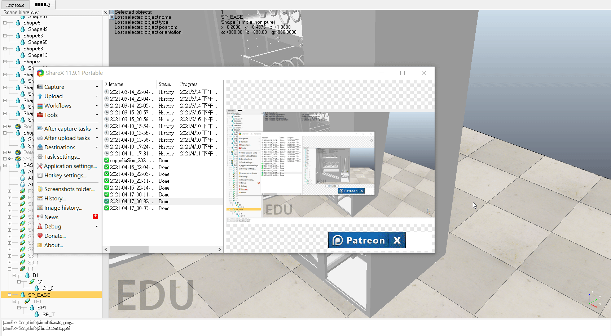

Inventor模擬 <<
Previous Next >> w9報告
w8模擬
4/9~4/11模擬測試
第一版
第一次模擬
一開始因為未與齒輪做連結而導致無法協調....

第二次模擬
雖然與齒輪做連結了，因為齒輪無法帶動板子上升
而導致破圖，使板子上升到齒輪上面

第三次模擬
矢板子與齒輪做連結後，雖然可以透過旋轉尺齒輪來使
板子上升，但與螺桿的配合還是怪怪的，然後無法上升
到指定高度。之後我們將下方滾輪也讓它旋轉，使商品
能滾進平台。還有上方的彈簧，讓它旋轉使商品能掉落
至滾輪處。

4/16~4/18
第四次模擬
修正第三次的問題後，現在可以上升至正常高度，且齒輪與蜗
桿的配合也不會這麼奇怪。再來我們將商品放入了彈簧中，並
讓它旋轉後掉到滾進平台，上升到可拿取的地方。

[補充說明]:商品再經由旋轉掉落的時候，因為會撞到外蓋的關係，所以會直接掉
到滾輪區，然後滑落，但是因為在模擬的時候蓋住外殼我們會看不見裡面，所
以我們會將外蓋打開，以便觀看，但這也導致了，商品失去了一個反彈的力讓
它掉到滾輪區，所以變得每次都會掉出來外面，所以我們只能將置物架設定為
無碰撞，讓商品直接掉落到滾輪區，已完成這次的模擬。(詳圖如下)

Inventor模擬 <<
Previous Next >> w9報告